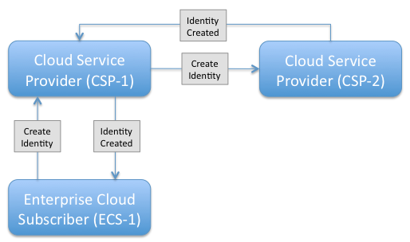

| TOC |
|
The Simple Cloud Identity Management (SCIM) specification is designed to make managing user identity in cloud based applications and services easier. The specification suite seeks to build upon experience with existing schemas and deployments, placing specific emphasis on simplicity of development and integration, while applying existing authentication, authorization, and privacy models. It's intent is to reduce the cost and complexity of user management operations by providing a common user schema and extension model, as well as binding documents to provide patterns for exchanging this schema using standard protocols. In essence, make it fast, cheap, and easy to move users in to, out of, and around the cloud.
The SCIM scenarios are overview user stories designed to help clarify the intended scope of the SCIM effort. They are part use case, part user story and part overall positioning document.
This document is an Internet-Draft and is subject to all provisions of Section 3 of RFC 3667. By submitting this Internet-Draft, each author represents that any applicable patent or other IPR claims of which he or she is aware have been or will be disclosed, and any of which he or she become aware will be disclosed, in accordance with RFC 3668.
Internet-Drafts are working documents of the Internet Engineering Task Force (IETF). Note that other groups may also distribute working documents as Internet-Drafts. The list of current Internet-Drafts is at http://datatracker.ietf.org/drafts/current/.
Internet-Drafts are draft documents valid for a maximum of six months and may be updated, replaced, or obsoleted by other documents at any time. It is inappropriate to use Internet-Drafts as reference material or to cite them other than as “work in progress.”
This Internet-Draft will expire on November 25, 2011.
1.
SCIM User Scenarios
1.1.
Background & Context
1.2.
Model Concepts
1.2.1.
Triggers
1.2.2.
Actors
1.2.3.
Modes & Flows
1.2.4.
Bulk & Batch Operational Semantics
1.3.
Cloud Service Provider to Cloud Service Provider Flows (CSP->CSP)
1.3.1.
CSP->CSP - Create Identity (Push)
1.3.2.
CSP->CSP - Update Identity (Push)
1.3.3.
CSP->CSP - Delete Identity (Push)
1.3.4.
CSP->CSP - Sync Identity (Push or Pull)
1.3.5.
CSP->CSP - SSO Trigger (Push)
1.3.6.
CSP->CSP - SSO Trigger (Pull)
1.4.
Enterprise Cloud Subscriber to Cloud Service Provider Flows (ECS->CSP)
1.4.1.
ECS->CSP - Create Identity (Push)
1.4.2.
ECS ->CSP - Update Identity (Push)
1.4.3.
ECS ->CSP - Delete Identity (Push)
1.4.4.
ECS ->CSP - SSO Push
1.4.5.
ECS ->CSP - SSO Pull
1.5.
Cloud Service User to Cloud Service Provider Flows (CSU->CSP)
1.5.1.
CSU ->CSP - Password Reset (Push)
Appendix A.
Document History
§
Authors' Addresses
§
Intellectual Property and Copyright Statements
| TOC |
| TOC |
The Simple Cloud Identity Management (SCIM) specification is designed to make managing user identity in cloud based applications and services easier. The specification suite seeks to build upon experience with existing schemas and deployments, placing specific emphasis on simplicity of development and integration, while applying existing authentication, authorization, and privacy models. It's intent is to reduce the cost and complexity of user management operations by providing a common user schema and extension model, as well as binding documents to provide patterns for exchanging this schema using standard protocols. In essence, make it fast, cheap, and easy to move users in to, out of, and around the cloud.
The SCIM scenarios are overview user stories designed to help clarify the intended scope and general operation of the SCIM effort. They are part use case, part user story and part overall positioning document. For consistency, they are based on and relate back to the latest protocol specification (REST API) and the latest core schema.
To aid reading, understanding and commenting on the SCIM scenarios, this document makes consistent use of the three key model concepts called Triggers, Actors and Modes. Each of these concepts is discussed in more detail in the Model Concepts section of this document. In summary, Triggers are things that start SCIM flows, Actors are the operating parities participating in the flow, and Modes represent the overall intent of the action (push or pull). There is nothing normative or overly definitive about these model terms. They are only relevant to SCIM to the extent in which they help frame the discussion and create a common language for the ongoing discussion.
| TOC |
| TOC |
Quite simply, triggers are actions or activities that start SCIM flows. Triggers may not be relevant at the protocol or schema level, they really serve to help identity the type or activity that resulted in a SCIM protocol exchange. Triggers make use of the traditional provisioning C.R.U.D (Create Read Update & Delete) operations but add additional use case contexts like "Sync" and "SSO" as they are designed to capture a class of use case that makes sense to the actor requesting it rather than to describe a protocol operation.
| TOC |
Actors are the operating parties that take part in both sides of a SCIM protocol exchange, and help identify the source of a given Trigger. So far, we have identified the following SCIM Actors:
| TOC |
Modes identify the functional intent of a data-flow initiated in a
SCIM protocol exchange. The two modes identified so far are 'push' and 'pull'
referring to the fact of pushing data to, or pulling data from an
authoritative identity data store.
In the SCIM scenarios, Modes are often used in the context of a flow between two Actors. For example, one might refer to a Cloud-to-Cloud Pull exchange. Here one Cloud Service Provider (CSP) is pulling identity information from another CSP. Commonly referenced flows are:
Modes & flows simply help us understand what is taking place; they are likely to be technically meaningless at the protocol level, but again they help the reader follow the SCIM scenario's and apply them to real work use cases.
| TOC |
It is assumed that each of the triggers action outlined in this document may be part of the larger bulk or batch operation. Individual SCIM actions should be able to be collected together to create single protocol exchanges.
This draft of the SCIM scenarios document however, does not specifically address the complexity and behavioral semantics of bulk and batch (things such as rollback, one-fail-stop etc.). Our initial focus is on identifying base flows and single operations. The specific complexity of full bulk and batch operations is left to a later version of the scenarios or to the main specification if addressed there.
| TOC |
These scenarios represent flows between two Cloud Service Providers
(CSP's). It is assumed that each CSP maintains an Identity Data Store
for its Cloud Service Users (CSU's). These scenarios address various
joiner, mover, leaver and JIT triggers, resulting in push and pull data
exchanges between the CSP's.
| TOC |
In this scenario two CSP's (CSP-1 & CSP-2) have a shared service
agreement in place that requires the exchange of Cloud Service User
(CSU) accounts.
CSP-1 receives a Create Identity trigger action from its Enterprise
Cloud Subscriber (ECS). CSP-1 creates a local user account for the new
CSU.
CSP-1 then pushes the new CSU joiner push request down-stream to CSU-2
and gets confirmation that the account was successfully created.
After receiving the confirmation from CSP-2, CSP-1 sends an
acknowledgement to the requesting ECS.

Figure 1.3.1-1 CSP->CSP Create Identity (Push)
This overall flows in the scenario are
broken down into following sample SCIM protocol exchanges.
Firstly the ECS requests a change to the target identity under its
scope of control.
PUT /User/3f62ce30-dcd6-4dd7-abfe-2352a76f9978
Host: FooBarInc.com
Accept: application/json
Authorization: Bearer h480djs93hd8
{
"schemas": ["urn:scim:schemas:core:1.0"],
"id": "3f62ce30-dcd6-4dd7-abfe-2352a76f9978",
"externalId": "701984",
"userName": "bjensen@example.com",
"name": {
"formatted": "Ms. Barbara J Jensen III",
"familyName": "Jensen",
"givenName": "Barbara",
"middleName": "Jane",
"honorificPrefix": "Ms.",
"honorificSuffix": "III"
},
"displayName": "Barbara Jensen",
"nickName": "Babs",
"profileUrl": "https://login.example.org/bjensen",
"emails": [
{
"value": "bjensen@example.com",
"type": "work",
"primary": true
},
{
"value": "babs@jensen.org",
"type": "home"
}
]
}
The service responds with the entire, updated User
HTTP/1.1 200 OK
Content-Type: application/json
{
"schemas": ["urn:scim:schemas:core:1.0", "http://hrextension/"],
"id": "3f62ce30-dcd6-4dd7-abfe-2352a76f9978",
"externalId": "701984",
"userName": "bjensen@example.com",
"name": {
"formatted": "Ms. Barbara J Jensen III",
"familyName": "Jensen",
"givenName": "Barbara",
"middleName": "Jane",
"honorificPrefix": "Ms.",
"honorificSuffix": "III"
},
"displayName": "Barbara Jensen",
"nickName": "Babs",
"profileUrl": "https://login.example.org/bjensen",
"emails": [
{
"value": "bjensen@example.com",
"type": "work",
"primary": true
},
{
"value": "babs@jensen.org",
"type": "home"
}
],
"http://hrextension" : [
{
"gender": "female"
},
{
"birthday": "1942-04-26"
}
],
"meta": {
"created": "2010-03-25T15:11:18Z",
"lastModified": "2011-05-27T16:37:25Z"
}
}
| TOC |
In this scenario two CSP's (CSP-1 &CSP-2) have a shared service agreement in place that requires the exchange of Cloud Service User (CSU) accounts. The Enterprise Cloud Subscriber (ECS-1) has already created an account with CSP-1 and supplied a critical attribute "department" that is used by CSP-1 to drive service options. CSP-1 then receives an Update Identity trigger action from its Enterprise Cloud Subscriber (ECS). CSP-1 updates its local directory account with the new department value. CSP-1 then pushes the mover change request down-stream to CSU-2 and gets confirmation that the account was successfully updated. After receiving the confirmation from CSP-2, CSP-1 sends an acknowledgment to the requesting ECS.
| TOC |
In this scenario two CSP's (CSP-1 &CSP-2) have a shared service agreement in place that requires the exchange of Cloud Service User (CSU) accounts. CSP-1 receives a Delete Identity trigger action from its Enterprise Cloud Subscriber (ECS). CSP-1 suspends the local directory account for the specified CSU account. CSP-1 then pushes a termination request for the specified CSU account down-stream to CSU-2 and gets confirmation that the account was successfully removed. After receiving the confirmation from CSP-2, CSP-1 sends an acknowledgment to the requesting ECS.
| TOC |
In this scenario two CSP's (CSP-1 &CSP-2) have a shared service agreement in place that requires the synchronization of Cloud Service User (CSU) accounts. On a periodic basis, CSP-1 sends a synchronization request to CSP-2 for a sub-set of its managed accounts. CSP-1 has the option to send a change-delta data set or a full data set as part of the synchronization requests. In either case, CSP-2 receives the data set and successfully carries out any required additions, updates or deletes.
| TOC |
In this scenario two CSP's (CSP-1 &CSP-2) have a shared service agreement in place that requires the exchange of Cloud Service User (CSU) accounts. However, rather than pre-provisioning accounts from CSP-1 to CSP-2, CSP-1 waits for a service access request from the Cloud Service User (CSU) before issuing account creation details to CSP-2. When the CSU completes a SSO transaction from CSP-1 to CSP-2, CSP-2 then creates an account for the CSU based on information pushed to it from CSP-1.
| TOC |
In this scenario two CSP's (CSP-1 &CSP-2) have a shared service agreement in place that requires the exchange of Cloud Service User (CSU) accounts. However, rather than pre-provisioning accounts from CSP-1 to CSP-2, CSP-2 waits for a service access request from CSP-1's Cloud Service User (CSU). When the CSU completes a SSO transaction from CSP-1 to CSP-2, CSP-2 then pulls sufficient information from CSP-1 to create a local account for the CSU.
| TOC |
These scenarios represent flows between an Enterprise Cloud Subscriber (ECS) and a Cloud Service Providers (CSP). It is assumed that both the ECS and the CSP maintains an LDAP service for the relevant Cloud Service Users (CSU's). These scenarios address various joiner, mover, leaver and JIT triggers, resulting in push and pull data exchanges between the ECS and the CSP.
Many of these scenarios are very similar to those defined in the Cloud Service Provider to Cloud Service Provider section above. They are identified separately here so that we may explore any differences and might emerge.
| TOC |
In this scenario an Enterprise Cloud Subscriber (ECS-1) maintains a service with a Cloud Service Provider (CSP-1) that requires the sharing of various Cloud Service User (CSU) accounts. A new user joins ECS-1 and so ECS-1 pushes an account creation request to CSP-1, supplying all required base SCIM schema attribute values and additional extended SCIM schema values as required.
| TOC |
In this scenario an Enterprise Cloud Subscriber (ECS-1) maintains a service with a Cloud Service Provider (CSP-1) that drives service definition from a key account schema attribute called Department. ECS-1 wishes to move a given CSU from Department A to Department B and so it pushes an attribute update request to the CSP.
| TOC |
In this scenario an Enterprise Cloud Subscriber (ECS-1) maintains a service with a Cloud Service Provider (CSP-1). Upon termination of one of its employees, ECS-1 sends a suspend account request to CSP-1. One week later the ECS wished to complete the process by fully removing the Cloud Service User (CSU) account and so it sends a terminate account request to CSP-1.
| TOC |
In this scenario an Enterprise Cloud Subscriber (ECS-1) maintains a service with a Cloud Service Provider (CSP-1). No accounts are created or exchange in advance. However, rather than pre-provisioning accounts from ECS-1 to CSP-1, ECS-1 waits for a service access request from the Cloud Service User (CSU) before issuing account creation details to CSP-1. When the CSU completes a SSO transaction from ECS-1 to CSP-2, CSP-2 then creates an account for the CSU based on information pushed to it from CSP-1.
| TOC |
In this scenario an Enterprise Cloud Subscriber (ECS-1) maintains a service with a Cloud Service Provider (CSP-1). No accounts are created or exchange in advance. However, rather than pre-provisioning accounts from ECS-1 to CSP-1, ECS-1 waits for a service access request from the Cloud Service User (CSU) before issuing account creation details to CSP-1. When the CSU completes a SSO transaction from ECS-1 to CSP-1, CSP-2 then creates an account for the CSU based on information pushed to it from ECS-1.
| TOC |
| TOC |
In this scenario a Cloud Service User (CSU) wants to change its password at cloud service authentication point. Post suitable authentication and authorization, the CSU sends the CSP a new password value. In some scenarios this activity will not be meaningfully differentiated from any other attribute change.
| TOC |
draft-scim-scenarios-01
draft-scim-scenarios-02
draft-scim-scenarios-03
| TOC |
| Darran Rolls (editor) | |
| Sailpoint | |
| Email: | darranrolls@sailpoint.com |
| Patrick Harding (editor) | |
| Ping Identity Corp. | |
| Email: | pharding@pingidentity.com |
| TOC |
Copyright © The IETF Trust (2011).
This document is subject to the rights, licenses and restrictions contained in BCP 78, and except as set forth therein, the authors retain all their rights.
This document and the information contained herein are provided on an “AS IS” basis and THE CONTRIBUTOR, THE ORGANIZATION HE/SHE REPRESENTS OR IS SPONSORED BY (IF ANY), THE INTERNET SOCIETY, THE IETF TRUST AND THE INTERNET ENGINEERING TASK FORCE DISCLAIM ALL WARRANTIES, EXPRESS OR IMPLIED, INCLUDING BUT NOT LIMITED TO ANY WARRANTY THAT THE USE OF THE INFORMATION HEREIN WILL NOT INFRINGE ANY RIGHTS OR ANY IMPLIED WARRANTIES OF MERCHANTABILITY OR FITNESS FOR A PARTICULAR PURPOSE.
The IETF takes no position regarding the validity or scope of any Intellectual Property Rights or other rights that might be claimed to pertain to the implementation or use of the technology described in this document or the extent to which any license under such rights might or might not be available; nor does it represent that it has made any independent effort to identify any such rights. Information on the procedures with respect to rights in RFC documents can be found in BCP 78 and BCP 79.
Copies of IPR disclosures made to the IETF Secretariat and any assurances of licenses to be made available, or the result of an attempt made to obtain a general license or permission for the use of such proprietary rights by implementers or users of this specification can be obtained from the IETF on-line IPR repository at http://www.ietf.org/ipr.
The IETF invites any interested party to bring to its attention any copyrights, patents or patent applications, or other proprietary rights that may cover technology that may be required to implement this standard. Please address the information to the IETF at ietf-ipr@ietf.org.